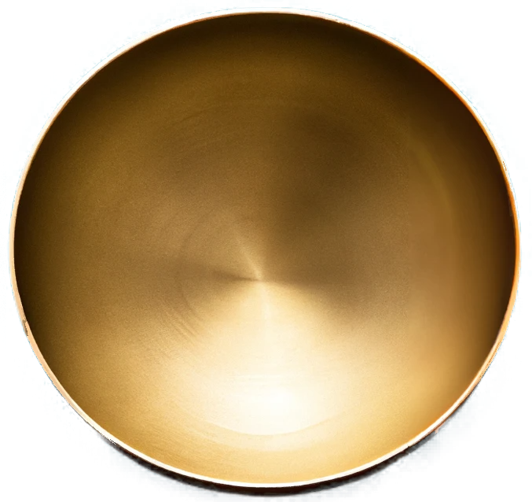
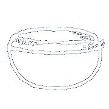

0.5 minute(s)
Smile! you are alive!

Base Ambience Sounds
More...
River
Ocean
Bird
Tab 2
This is the content of tab 2.
Root Chakra
Sacral Chakra
Solar Plexus Chakra
Heart Chakra
Throat Chakra
Third Eye Chakra
Crown Chakra